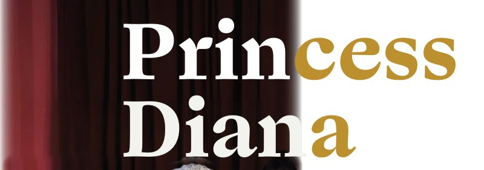

Title · cover & half-title
Great Vibes
Wedding-invitation script, used only on the title.
An A to Z of bridal fashion, written so a bride can walk into any boutique and understand every word the stylist says.
Bridal fashion is a timeless story. Let this glossary be your guide to its beauty and artistry.
Every bridal term from A-line to zero-waste, explained in a line or two and shown on a real dress, with seven chapters on gowns that changed bridal fashion.
Warm, quiet tones pulled from the lace, so the type never tints the white gowns. Tap a swatch to copy its hex.
A script for the title, a bold serif for names, a book serif for reading.
Wedding-invitation script, used only on the title.

Bride names set large across photographs, split into white and gold.
Bishop Sleeve
Long, billowy sleeves that gather at the wrist with a fitted cuff, creating a romantic and elegant look.
All definitions and essays. Shown in a close stand-in.
Written, edited and designed by Aleesha K. L. · 2025